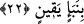

Süleyman (a.s.)’ın mülkünden ve her şeyin onun emrine verildiğinden bahsetti. Öbür
hüdhüd de ona sâhibi Belkıs’ın mülkünü, emrinin altında on iki bin komutanı ve her
komutanın da emri altında yüz bin askeri olduğunu anlattı. Süleyman (a.s.)’ın hüdhüdü
bunu görmek için diğeriyle gitti. Ancak ikindiden sonra geri döndü. Bu durum şöyle
anlatılmaktadır:
22. Çok geçmeden (hüdhüd) gelip şöyle dedi: Ben, senin bilmediğin bir şeyi
öğrendim. Sebe’den sana çok doğru (ve önemli) bir haber getirdim.
“ bekleyerek durmak demektir.
“Çok geçmeden” uzun zaman geçmeden “(hüdhüd)ün gelmesi...” işâret etmektedir ki
gaybet her ne kadar şiddetli azâbı, yâni huzûrun mutluluğundan ve faydalarından
mahrûmiyeti gerektirse de çabucak geri dönmek ve elden kaçanı telâfî etmek de
mutluluğun emârelerindendir.
Zikredilir ki hüdhüdün yerinden güneş ışığı Süleyman (a.s.)’a isâbet etti. Bunun
üzerine o tarafa bakınca hüdhüdün yerinin boş olduğunu gördü. Sonra kuşlara önderlik
eden akbabayı çağırdı ve onu sordu. Ondan bir haber alamayınca kuşların efendisi
kartala: “Onu bana getir” dedi. Kartal yükselip baktı. Onun gelmekte olduğunu gördü ve
üzerine saldırdı. Hüdhüd Allah Teâlâ’nın adını anarak ona şöyle dedi: “Sana güç ve
kuvvet veren hakkı için bana acımanı diliyorum.” dedi. Kartal onu bıraktı ve dedi ki:
“Annesi kaybedesice! Allah’ın peygamberi sana mutlaka sana azâb etmek için yemin
etti.” dedi. Hüdhüd: “Hiçbir istisnada bulunmadı mı?” diye sordu. Kartal: “Yahut da
bana (mâzeretini belirten) açık bir delil getirecek!” dedi” diye söyledi. Hüdhüd
Süleyman (a.s.)’a yaklaşınca, O’na tevâzu göstererek kuyruğunu indirdi ve kanatlarını
yere sürüyerek geldi. Yakınlaşınca Süleyman (a.s.) onu boynundan tuttu ve kendine
doğru çekti. Bunun üzerine hüdhüd: “Ey Allah’ın peygamberi! Allah’ın önünde
duracağın zamanı hatırla.” dedi. Bu söz üzerine Süleyman (a.s.) titredi.
Şöyle rivâyet edilmiştir: Hz. Süleyman (a.s.) hüdhüde: “Senin tüyünü yolup kanadını
koparsam, sıcak güneşin altına atsam ne dersin?” diye sordu. Hüdhüd: “Bilirim ki bunu
yapmazsın. Çünkü dediğin, avcıların yaptığı şeydir; peygamberlerin işi değil.” diye
karşılık verdi. Süleyman (a.s.): “Boğazını keserim.” dedi. Hüdhüd: “Eminim ki
yapmazsın. Çünkü bu kasapların işidir, peygamberlerin değil.” cevabını verdi. Hz.
Süleyman (a.s.): “Seni cinsin olmayan bir hayvanla kafese kapatırım” dedi. Hüdhüd
“Bunu da yapmayacağını bilirim. Zira bu nâmerdlerin işidir, peygamberlerin değil.
Hâlbuki peygamberler nâmerd olmazlar.” karşılığını verdi. Hz. Süleyman (a.s.): “Şimdi
sen söyle bakalım, sana ne yapayım?” Hüdhüd şu cevabı verdi: “Affet ve bağışla.